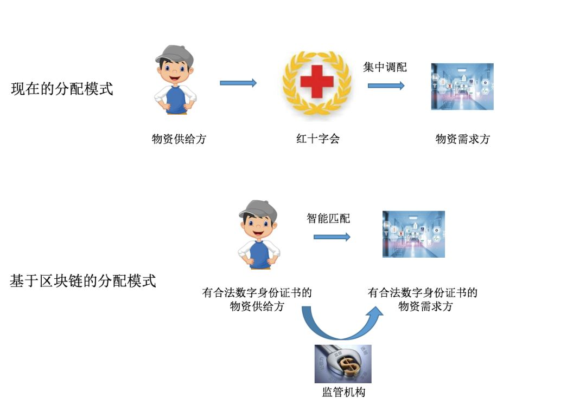
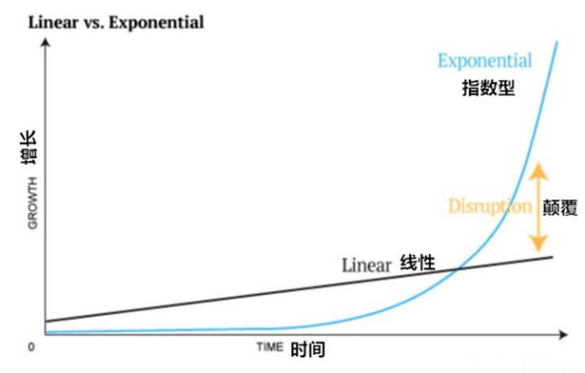
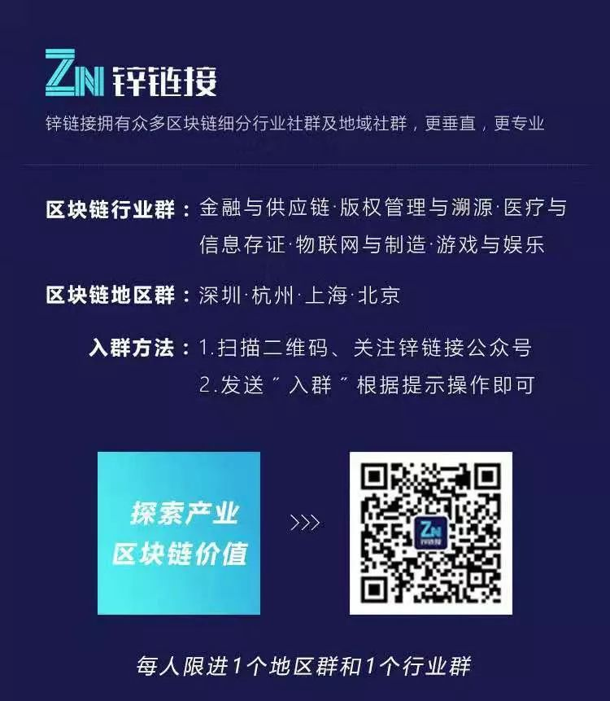

危机下的民间志愿者：把自己逼成超级对接平台
原文链接 备份链接 他觉得自己像一个巨大的电插座，身上插满了孔，求助信息和资源提供信息被一起插到他身上，他再来牵线对接。 文 | 谢婵 李叙瑾 编辑 | 小豆 22岁的梅浩宇窝在出租屋里，吃光了13包泡面和3大袋零食，每天睁开眼睛，他就开 …

文/王巧
编辑/独秀
头图来源于网络
新年伊始，全国战“疫”，确诊病例与日俱增，从几百、几千，上万，数字的增加牵动着每个国人的心。各路救援物资陆续抵达武汉，然而，物资堆积在武汉红十字会的仓库，迟迟发不出去。
救命的医疗物资卡死在“最后一公里”，无疑是最令人痛心的。
究其原因，是物资管理的低效与信息不透明。短时内大批量物资对于红十字会而言已是“超纲考题”，公众对于捐赠物资的去向一无所知，更是雪上加霜。
针对红十字会内部工作效率低下、管理混乱、分配不公问题，刘明瑞告诉锌链接，“病毒”的传播具有“指数级”的威力，红十字会用落后的“线性”系统去应对指数级的危机都很难成功。而且，“病毒”传播通常都带有很大的不确定性，复杂性，需要极高的应对时效性。
物资哪去了？这个武汉红会回答不了的问题，区块链等技术或许可以。
清华大学新闻与传播学院教授、微博大V“新媒沈阳”发微博称，本质来说物资的分配和信息的推送都是类似的。信息推送今天已经走到了智能推荐时代，而物资的分配也应该引入AI、区块链、云计算和大数据（ABCD），并且全程全效全息全员可以查询。
物资信息上链
首先，一贯的信息不透明，导致红十字会信用严重缺失只有数据透明了，才便于接受公众监督，才能发现分配数量是否真实，分配过程是否快速，分配结果是否公平。
WeSpace可信数字生态创始人宣宏量告诉锌链接，区块链是一个“自证可信”的体系。任何一个提供公共服务或者产品生产、销售机构，敢把核心数据上链，说明敢于“自证清白”；不敢上链，一旦工作中失误公开化，那肯定会遭到更多的公众质疑。
他认为，可以利用云计算和区块链技术构建一个可信的医疗物资管理系统，推动医疗物资管理模式创新。即在原有管理模式基础之上，增加关键节点核心数据的签发上链环节。通过云链端协同，云端负责数据计算、证据存储和数据查询，链端负责可信数据和可信证据存储与查证，客户端提供数据采集、云链互动，从而打造一个全新的可信的公共服务体系。
其次，要想解决医疗物资分配问题，就要将整个流程彻底公开，不管是捐赠者、公众还是需求方，都能清楚看见每笔物资的流向，让每笔物资都能落到实处。
长虹信息安全实验室首席科学家唐博告诉锌链接：“需要将前后端的数据打通，使捐赠数据和分配数据都公示，参与角色包括捐赠者、分配者和监督者，其次需要明确各自权力和义务，系统强制执行。”
据新京报消息，中国人民大学国家发展与战略研究院青岛分院院长、公共管理学院副教授张楠迪扬也认为，在资源配置上，传统技术手段很难实现社会资源跨部门、跨领域的综合实时信息共享及开放。
“面对公共卫生危机，利用区块链技术构建物资链，实现社会各界各部门的可供物资的数据整合，在全国范围实时了解物资产量、库存、追踪运输。区块链技术下，物资始发地、走向、滞留地，分发情况都可在链上实时记账，数据多点存储，并向社会公布。物资的配送情况清晰可见，全社会可以共同监督，提高资源配置效率，增强社会互信。”
近日，趣链科技便联合海尔智家、中国雄安集团等企业开始研发“捐赠物资溯源平台”。
根据设想，国内外许多机构都分布在这个平台上，每当有人或者有机构希望往某个机构捐助一批物资时，只要在平台上简单登记，就能看到捐赠详情、物流跟踪、物资接收、物资落实等全部流程，而且，还可实时看到需求动态，全流程可溯源、难篡改，解决“需求难发声、捐赠难到位、群众难相信”的三大难题。
据锌链接了解，该项目预计2月上线。
此外，要想实现全流程公开透明，还需借助物联网技术。德方智链金融研究室主任袁东阳告诉锌链接，结合将关于物资的种类、数量、配送要求、受配对象、分配要求以及分配后的结果等信息，以及依靠物联网采集的物资位移、时间和状态等信息上链，并开放给分配者、受配者、政府机构、物流公司等主体，实现数据共享和比对，就能确保所有关于物资分配的信息透明、及时、真实地被各方所获悉，避免物资丢失、错配，提高物资分配的时效性和准确性。
站在技术的角度，区块链的确可以做到公开透明，但ArcBlock 创办人兼CEO冒志鸿认为，还有组织、体制、法律等问题。IT系统是为人服务的，尤其涉及捐赠物资这样的系统，首先要保证数据本身是准确的，放到链上才有意义，其次要确保执行是到位的，链只能保证链上状态，不能保证是否真的贯彻执行了。

数字身份，智能匹配物资
医疗物资全流程公开透明后，再为医疗物资需求单位和供给单位颁发合法数字身份证书，使得发布的需求和供给信息真实有效，这样能够合理、正确地匹配真实需求，让医疗物资发挥最大效用。
德方智链技术总监袁运亮告诉锌链接，为医疗物资需求单位和供给单位颁发合法数字身份，医疗物资需求单位按类、数目、质量等维度将需求上链，医疗物资供给单位将能供给的物资信息也按对应维度上链，线上智能匹配，物资点对点的分配，全链路溯源，并引入监管部门进行审计。需求和供给方保持每日进行数据维护更新，整个物资分配过程透明、高效，加快医疗物资的合理正确分配。
袁运亮补充道，只有具有合法的数字身份证书才能使用平台发布需求，提供供给信息，防止非法的、不真实的需求和供给信息，保证信息准确性。其次，智能匹配，点对点分配，可以不经过中间方（武汉红十字会）。

图片来源：作者绘制
供给方直接对接需求方，对需求的了解也会更精准，物资调配也会更快速。

指数型危机需要“指数型组织”
应对指数型的危机，我们需要的是一个更高效，更有韧性的未来系统。正如奇点大学的萨利姆伊斯梅尔在《指数型组织》中所提出的观点，我认为未来系统的核心在于自组织、社区及大众，信息可信和网络协同。区块链技术的不可篡改，可追溯，全透明的特性，可以在未来系统中发挥核心的作用。
刘明瑞告诉锌链接：“过去系统强大的标准是拥有多少资源，未来系统强大的标准是如何让资源高效流动。红会这样的传统组织即使拥有再多的资源，如果无法高效的去把资源调动流转，注定不是应对危机时的强大系统。

图片来源：受访者提供
每个指数型组织都有着一个宏大的充满变革感的目标，当有了这么一个宏大的目标以后，整个组织内部矛盾就减少了，就会变成一致对外。其次，指数型组织都不会拥有海量的员工，但是有海量的人在干活，最有价值的东西由社群和大众提供。你不需要有自己的专业人员，你只需要给他们提供一个平台，社群会和大众会贡献特别多的力量。
未来，权利从核心向边缘转移。未来，应对社会不确定性，需要的是利用新一代信息技术赋能的新型组织。”
此次疫情，科技的力量随处可见。
比如，武汉火神山医院，华为配合三大运营商仅用4天就搭建完成4/5G 无线网络及专线网络；AI也成为前线医务人员的重要加持力量，阿里达摩院研发的AI算法可将原来数小时的疑似病例基因分析缩短至半小时，大幅缩短确诊时间，并能精准检测出病毒的变异情况；此外，为了进一步加快新疫苗、新药的研发和上市，BAT等国内众多科技公司纷纷向科研机构免费开放自己的 AI 算力。
然而，科技的参与度仍远远不够。武汉红会便是一个典型例子，无论数字经济的口号再响亮，关键时刻的“短板”，足以暴露数字化普及的诸多问题。
希望当我们再次面临同样困难时，有更多科技的助力：有区块链技术能够帮助信息透明化；有物联网对医疗物资流动路径进行跟踪，为上链数据的真实性提供保障；有云计算对海量数据进行快速计算；还有为医疗物资需求单位和供给单位颁发合法数字身份，能够合理匹配需求，让医疗物资发挥最大效用。

欢迎加入我们的社群
公众号后台回复“入群”即可

今日头条／腾讯新闻／凤凰新闻／百家号／搜狐新闻／一点资讯／雪球等50多家媒体入驻账号
©本文版权归“锌链接”所有
原文链接 备份链接 他觉得自己像一个巨大的电插座，身上插满了孔，求助信息和资源提供信息被一起插到他身上，他再来牵线对接。 文 | 谢婵 李叙瑾 编辑 | 小豆 22岁的梅浩宇窝在出租屋里，吃光了13包泡面和3大袋零食，每天睁开眼睛，他就开 …
原文链接 备份链接 经济观察网 见习记者 程璐洋 2月4日，经济观察网从湖北省新型冠状病毒感染肺炎疫情防控指挥部和湖北省卫生健康委员会获悉，湖北省红十字会、慈善总会和青少年发展基金会3家机构接收的非定向捐赠医疗防控物资分配方案明确。 湖北 …
原文链接 备份链接 近日，作为新型冠状病毒肺炎疫情的主要捐赠渠道，湖北省及各级红十字会再次站在了舆论风暴之中。疫情爆发以来，社会各界源源不断捐赠湖北，与此同时，前线医院却纷纷在社交媒体上呐喊物资告急，大众不禁发问，我捐的钱用上了吗？给谁用 …
原文链接 备份链接 Haylin是一名生活在武汉积玉桥的自由职业戏剧人。疫情爆发的这段日子，她说自己作为一个武汉人，“已经习惯了每天早上起来查有多少新增病例等等，晚上睡觉前看又有哪个医院在发求助消息的习惯”。为了出力，她参与了一个志愿者 …
原文链接 备份链接 关注并星标消费新声 不错过泛消费任何最新动态 从这个物资对接平台的建立、运作中，我们看到互助的力量。 作者 | 赵烨楠 编辑 | 罗立璇 1月24日，中国春节的大年三十、武汉“封城”的第二天。 在大量患者涌向医院的情况 …